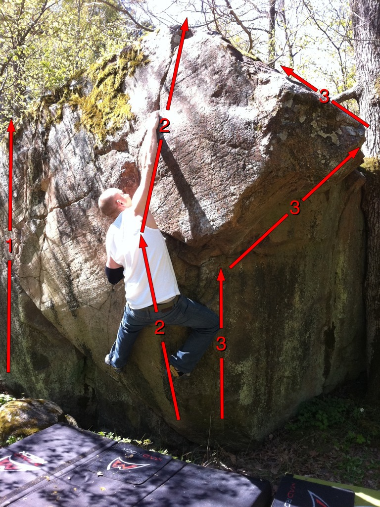
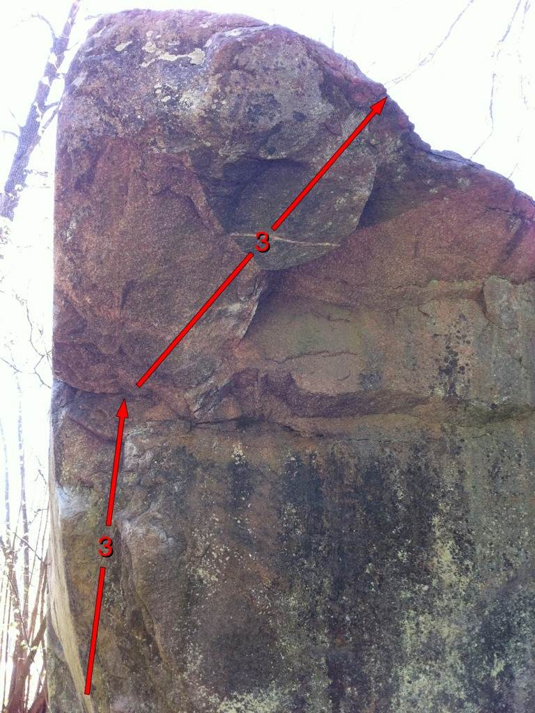

GPS: 59.432514,17.983965
Litet block med ett fint överhäng. Möjlig men svår travers finns, och ett par tre problem med lite olika insteg. Har fått höra att det finns två stycken äldre förare till detta lilla block och samtliga problem som beskrivs här har gjorts redan tidigt 90-tal av Hasse Häggquist, vet tyvärr inte vad han kallade problemen. Tänkte att föraren kan ligga kvar ändå som ett komplement! Värt ett besök om ni är i krokarna...
Sollentuna, Edsviken. Stenen ligger i princip mitt emot infarten till Bergendahls Kursgård, väl synlig från vägen. Kör danderydsvägen (262) och sväng in på Landsnoravägen, skyltat Bergendahl, håll höger i T-korset. Fortsätt 30 meter förbi infarten till kursgården så ser man blocket på höger sida.
Tre problem testade. Finns möjligen en svår travers.
 Föraren skapad av: Jim Eriksson
Kategori:Norra Stockholm
Copyright (C) Permission is granted to copy, distribute and/or modify this document under the terms of the GNU Free Documentation License, Version 1.3